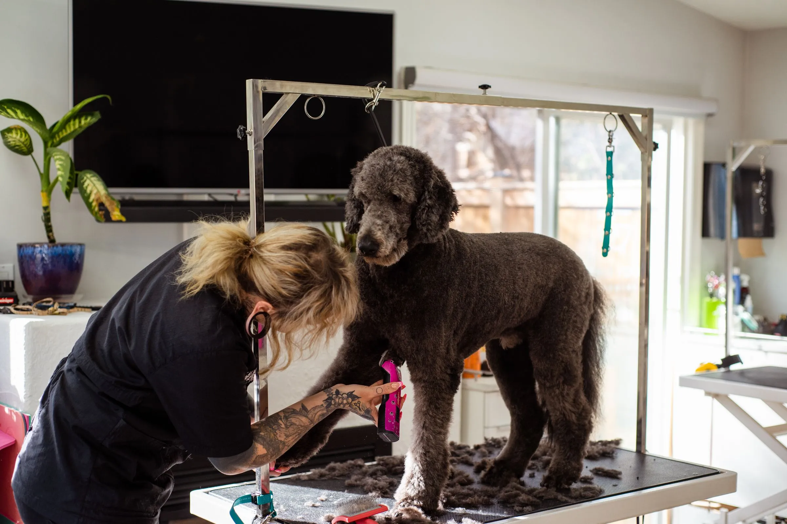
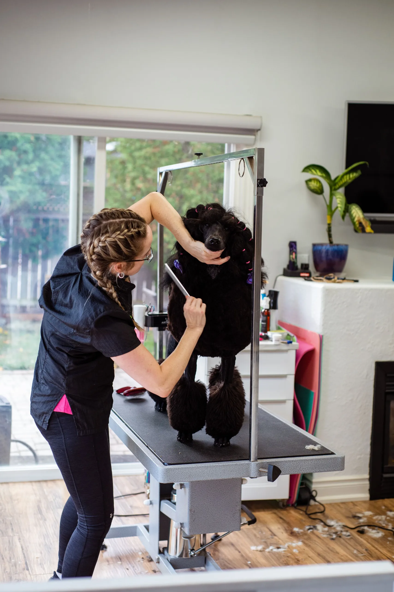
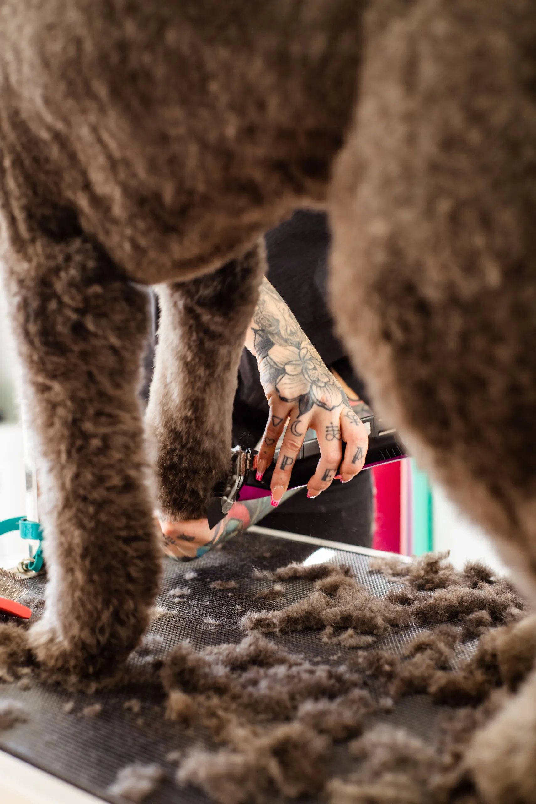
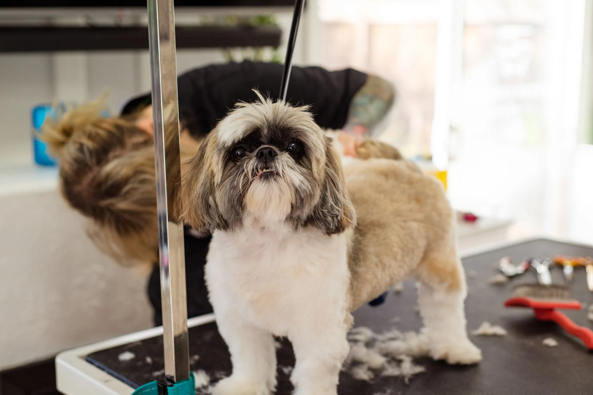
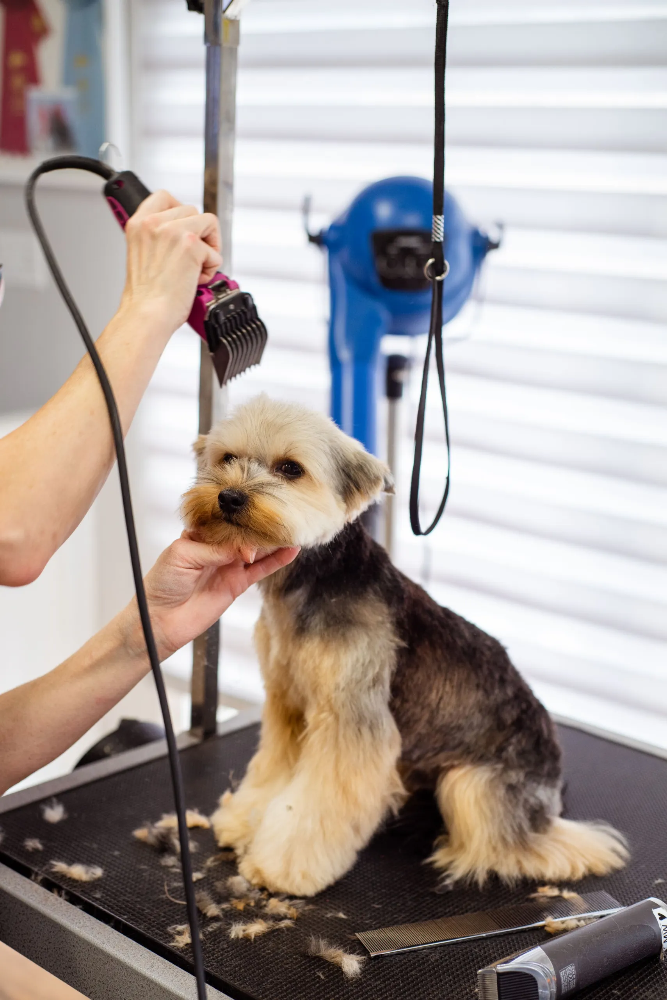
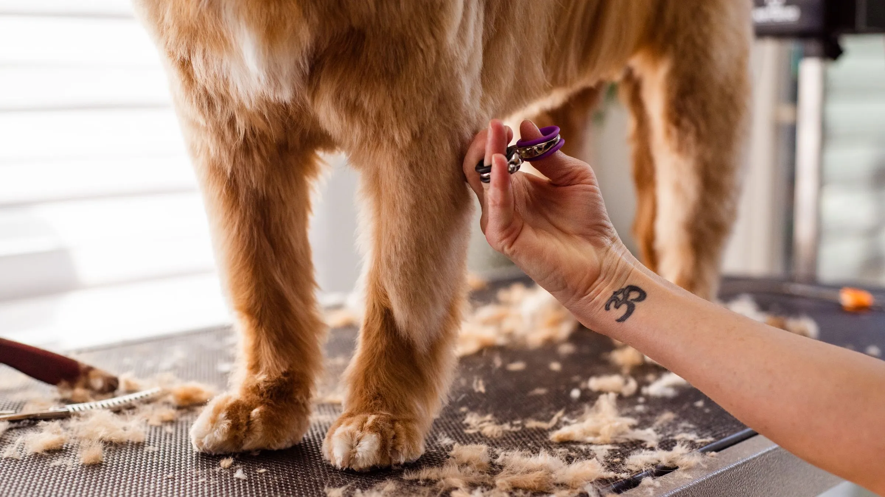
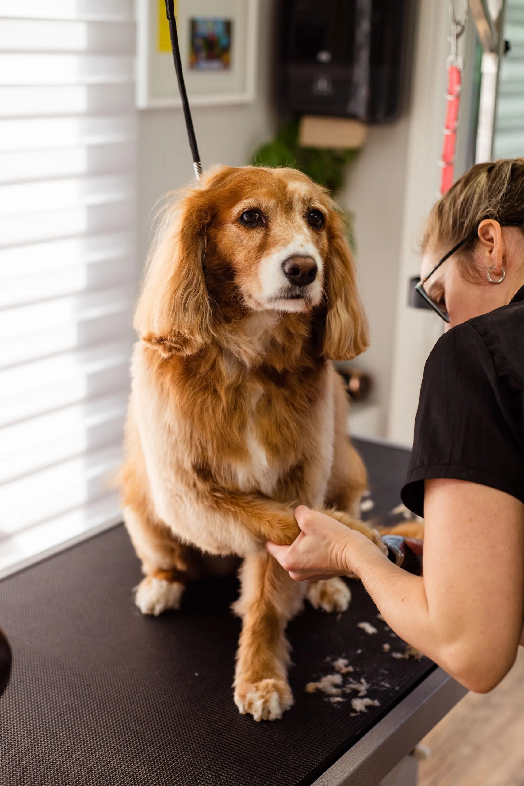
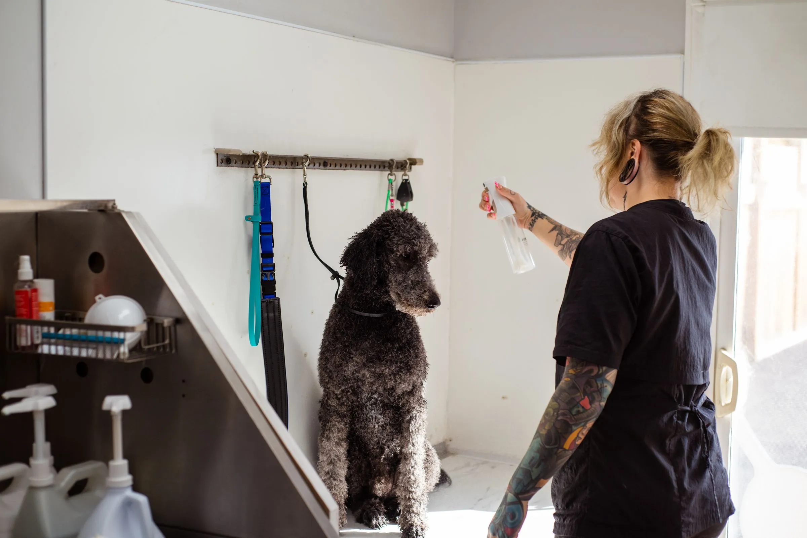

Curly, long and spaniel coats, kept in a finish you like and a routine you can manage, on Atwood Ave in Madison.
Taking new curly and long-coated dogs. Spaniels: short waitlist.
Moss's routine
Standard poodle · since 2019
Lamb trim, one inch on the body. Metal comb to the skin on Sundays.
Back in
5 weeks

Each coat has its own rhythm. Not sure? We'll help at your first visit.


Poodles and curly mixes. Lamb or teddy trim.
Back in4–6 weeks

Shih tzus and yorkies. Kept long, or short.
Back in4–8 weeks

Cockers and cavaliers. Natural, or short.
Back in6–8 weeksShort and double coats: bath and de-shed, from $60. About short coats

One dog per groomer at a time.
Dried by hand. No cage dryers.
Waiting dogs rest on a bed, not in a crate.
Never sedated. If a dog panics, we stop.